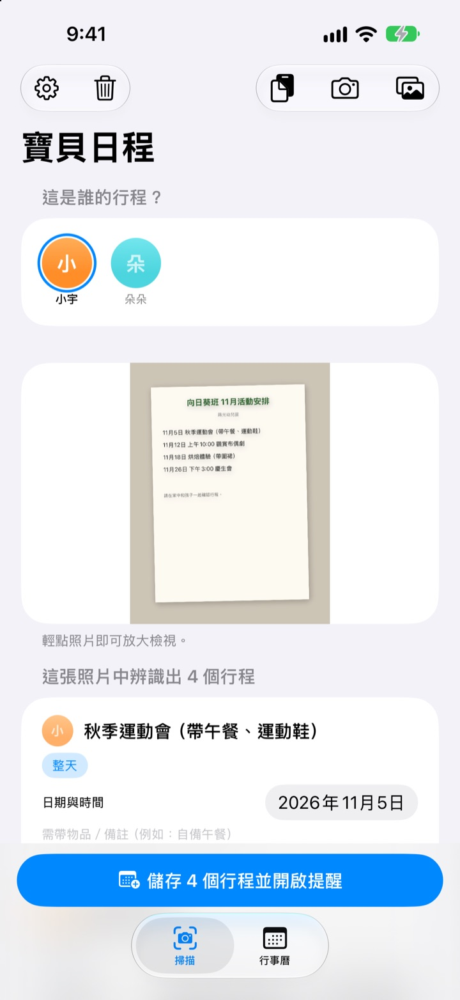
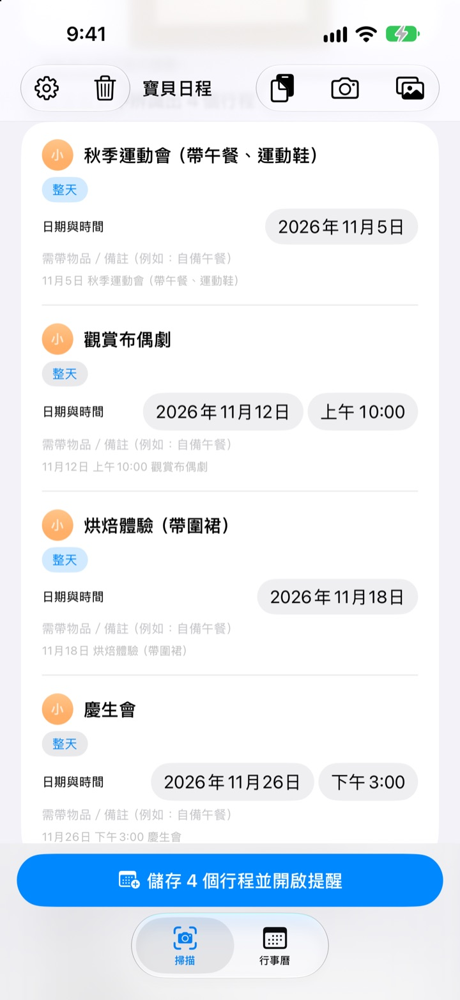
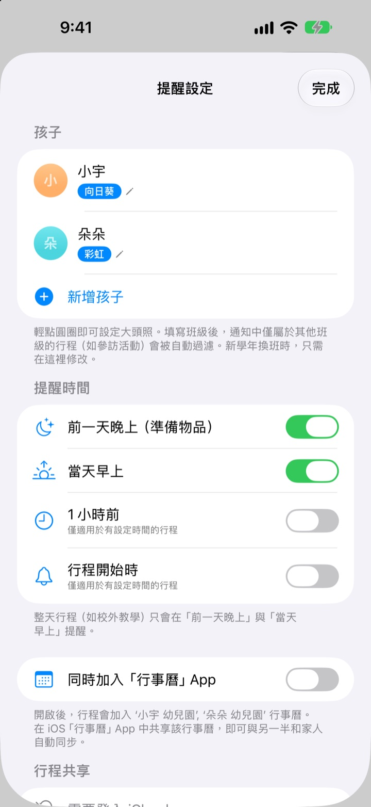
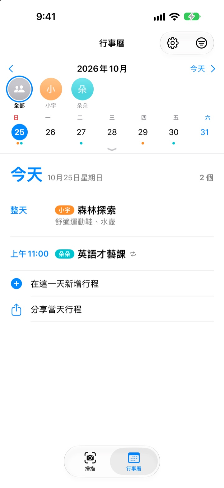

通知拍一下就好
要帶的東西前晚提醒
把幼兒園發的月行事曆拍下來，寶貝日程會讀出日期、時間和活動名稱，一次放進行事曆。校外教學前一晚 8 點，它會提醒你別忘了準備便當。
所有功能免費。照片不會離開你的手機。

拍一張通知試試看
這是一份下個月活動通知的範例。拍下後，它會像 App 一樣找出行程和要帶的物品，並依你選的時間預約提醒。
還在把聯絡簿上的行程抄進行事曆嗎？
一個月五、六個活動，每次要帶的東西都不同：便當、運動服、圍裙。貼在冰箱上的行事曆，通勤路上看不到，想起來時往往已經是當天早上。寶貝日程把那一張紙變成行事曆和提醒。
一張照片，一整個月
月曆、親師通知、單張活動通知，不管什麼樣子，拍照或從相簿選取，就能讀出日期、時間和活動名稱。也可以直接貼上老師傳來的訊息，「明天」「這週五」這類說法也會換成實際日期。
儲存前可以直接修改標題、日期和攜帶物品，不需要的行程往左滑就能刪掉。填好孩子的班級，其他班專屬的活動會自動濾掉。

要帶的東西，前一晚提醒你
提醒時間可選前一天晚上 8 點、當天早上 7:30、1 小時前或準時。攜帶物品會出現在提醒裡，書包不再漏東西。
開啟「同時加入『行事曆』App」，行程會放進以孩子名字命名的專屬行事曆，已經加過的不會重複加入。

孩子不只一個，全家一起看也行
每個孩子用不同顏色區分，可以一起看，也能單獨看。它還會參考過去的紀錄，猜出新通知是哪個孩子的。
傳送邀請連結，另一半、阿公阿嬤或保母都能查看和修改同一份行程。主畫面小工具隨時顯示接下來的安排。

三個步驟就能開始
- 1
新增孩子
輸入名字和班級，大頭照想放再放。
- 2
拍下通知
正面拍攝、讓字跡清楚，辨識會更準確。
- 3
確認後儲存
允許通知後，就會在你選的時間提醒帶東西。
提醒什麼時候來
- 前一天晚上 20:00
- 準備攜帶物品，預設開啟
- 當天早上 7:30
- 今日行程提醒，預設開啟
- 1 小時前
- 僅限有設定時間的行程
- 行程開始時
- 僅限有設定時間的行程
校外教學這類整天的行程，只會收到前一晚和當天早上的提醒。隨時可以在設定中開關。
所有功能都免費
免費
- 從照片和訊息讀取行程
- 儲存前修改，濾掉其他班的行程
- 前一晚、當天早上、1 小時前和準時提醒
- 依孩子分色，合併行事曆
- 與「行事曆」App 同步
- 用邀請連結和家人共享
- 主畫面小工具
支持開發者
- 可以在設定中隨意送一點小費
- 小費不會解鎖任何功能，不送也一樣能用
沒有廣告，也沒有訂閱。
常見問題
可以拍哪些照片？
月曆（表格式）、文字形式的親師通知，以及單張活動通知或傳單都可以。正面拍攝、讓字跡清楚，辨識會更準確；也能一次選多張照片掃描。
少了幾個行程，或標題有錯字。
手寫或模糊的字可能比較難辨識。可以在找出的清單中直接修改標題、日期和攜帶物品，不需要的行程往左滑刪除。漏掉的行程請在「掃描」分頁用「手動新增行程」補上，再重新儲存。
收不到提醒。
請到「設定」>「通知」>「寶貝日程」確認已允許通知。在 App 的設定（⚙️）中也能選擇要接收哪些時間的提醒。
連其他班的活動也加進來了。
請在設定中輸入孩子的班級名稱，通知裡其他班專屬的活動就會自動濾掉。升班換了班級，只要改這裡就好。
我有好幾個孩子。
可以在設定中新增多個孩子並放大頭照。掃描時選擇是誰的行程，行事曆就會依孩子分色，也能在合併檢視和個別孩子之間切換。
想和另一半一起看行程。
在設定的「行程共享」點「邀請他人一起查看」，用訊息傳送邀請連結。對方也能查看並修改所有孩子的行程，任何一方修改都會馬上同步到雙方。這和 Apple 的家人共享無關。
還有其他分享方式嗎？
用「行事曆」分頁的分享按鈕，可以傳送寶貝日程檔案、行事曆檔案（.ics）或文字摘要。開啟「同時加入『行事曆』App」後會建立以孩子名字命名的行事曆，在「行事曆」App 中透過 iCloud 共享它，家人也能同步看到。
照片或行程會被傳到別的地方嗎？
不會。照片中的文字全都在手機上辨識，資料也只存在手機裡。只有在用「行程共享」邀請別人時，行程才會經由你的 iCloud 與受邀的人共享。
遇到問題或希望新增功能，請寄信到 leeo@kakao.com。我們通常會在 2 到 3 天內回覆。附上裝置型號和 iOS 版本會很有幫助。